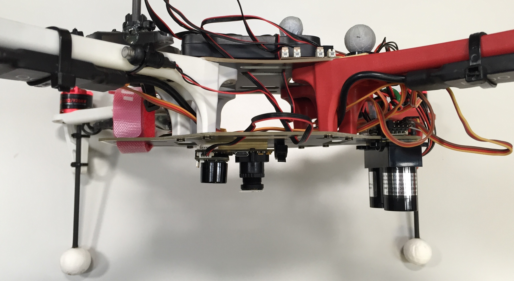
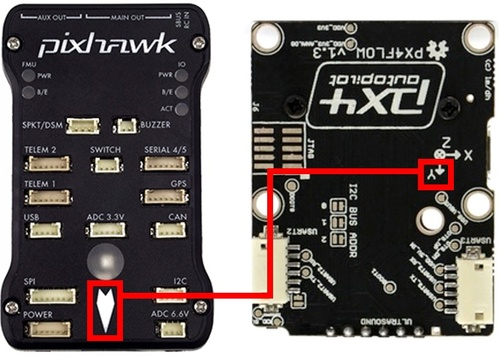
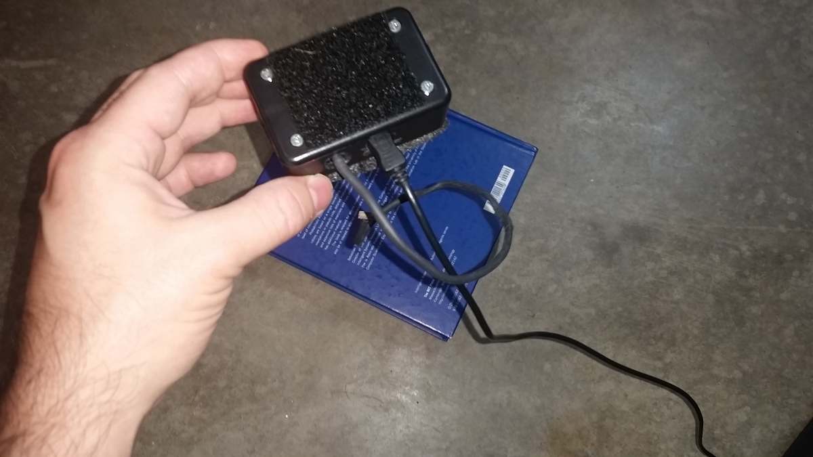
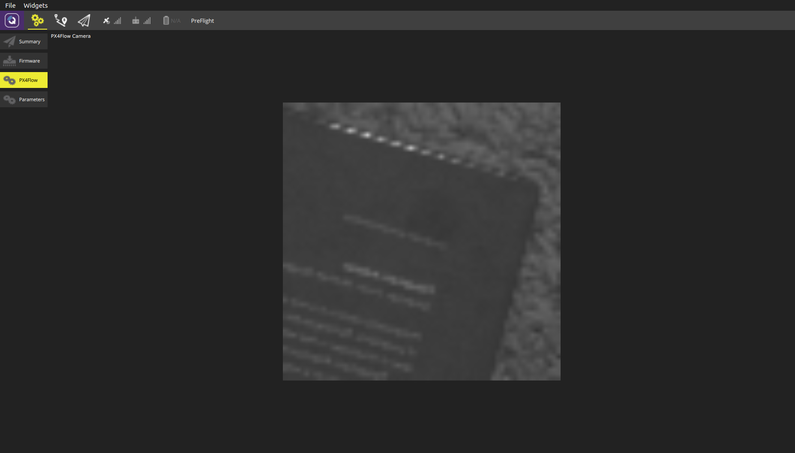

光流
Optical Flow uses a downward facing camera and a downward facing distance sensor for position estimation. Optical Flow based navigation is supported by all three estimators: EKF2, LPE and INAV (see below).
设置
As mentioned above, an Optical Flow setup requires a downward facing camera which publishes to the OPTICAL_FLOW_RAD topic and a distance sensor (preferably a LiDAR) publishing messages to the DISANCE_SENSOR topic.
The output of the flow has to be as follows
| Moving direction of the MAV | Integrated flow |
|---|---|
| Forwards | + Y |
| Backwards | - Y |
| Right | - X |
| Left | + X |
And for pure rotations, the integraded_xgyro and integraded_x (respectively integraded_ygyro and integraded_y) have to be the same.
An exemplary setup is the PX4Flow and LIDAR-Lite (see picture).

相机
PX4Flow
The easiest way to calculate the optical flow is to use the PX4Flow board. In order to use the PX4Flow board, just connect it with I2C. The recommended way of mounting it is with the Sonar side facing forwards (see image). In this configuration the parameter SENS_FLOW_ROT should be 270 degrees (which is the default). Make sure the the PX4Flow board is well dampened.

In order to ensure good optical flow quality, it is important to focus the camera on the PX4Flow to the desired height of flight. To focus the camera, put an object with text on (e. g. a book) and plug in the PX4Flow into USB and run QGroundControl. Under the settings menu, select the PX4Flow and you should see a camera image. Focus the lens by unscrewing the set screw and loosening and tightening the lens to find where it is in focus.
注意：如果你的飞行高度超过了3米，相机将聚焦在一个无限远的地方，对于在更高处的飞行，这一点不需要作改变

图：用一本书在你想要飞行的高度上完成光流相机的聚焦，一般在1-3米的范围内。超过3米时，应该将相机聚焦到一个无限远的位置，这样对于在更高处的飞行也适用

图8：QGroudControl地面站的px4flow光流界面可以被用来对相机进行聚焦
其他相机
It is also possible to use a board/quad that has an integrated camera (Bebop2, Snapdragon Flight). For this the Optical Flow repo can be used (see also snap_cam).
Range Finder
We recommend using a LIDAR over a Sonar, because of robustness and accuracy. One possibility is the LIDAR-Lite.
Estimators
Extended Kalman Filter (EKF2)
In order to use the EKF2 estimator, make sure the parameter SYS_MC_EST_GROUP is set to 2 and reboot. For Optical Flow fusion, the parameter EKF2_AID_MASK has to be set accordingly.
Local Position Estimator (LPE)
TODO